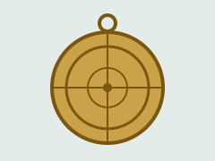

Astrolabio planisferico
Officina veneziana, metà del XVI secolo
Strumento con madre, tre timpani e rete
- Tipologia
- Strumento scientifico
- Luogo
- Venezia
- Materia
- Ottone fuso e inciso

Officina veneziana, metà del XVI secolo
Strumento con madre, tre timpani e rete